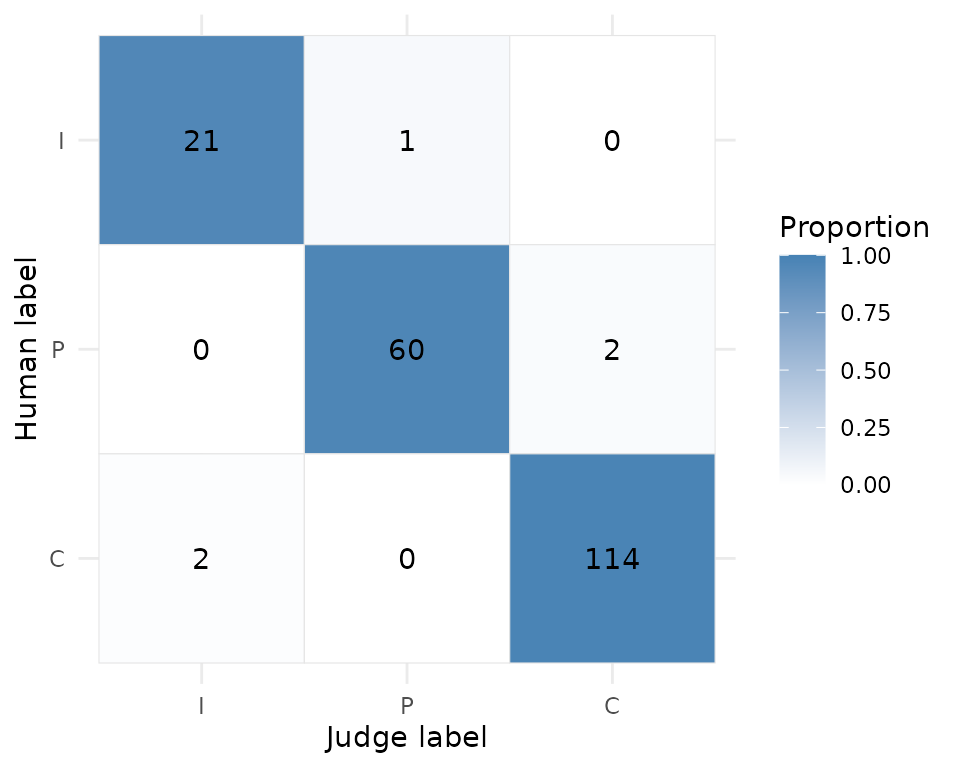

An LLM judge is a measurement instrument. Before its scores drive a
launch, ranking, or regression gate, we need evidence about agreement
with humans, class-specific errors, bias sensitivity, and repeatability.
yourhonor assembles that evidence, but it does not invent a
universal definition of “good enough.”
This article calibrates one judge against human labels and turns that evidence into an explicit decision. The judge is synthetic, so no model is called, but it has a flaw that a real judge might have: it reads long answers as more complete than short ones. Calibration alone cannot see that flaw; the other articles find it:
-
vignette("bias-probes")perturbs the inputs and catches it. -
vignette("stability")measures how often the judge changes its mind on re-runs, and reuses vitals epochs. -
vignette("policies-audit")combines all three kinds of evidence under one policy and writes the audit artifact. - Wrap an ellmer chat as a judge replaces the synthetic judge with a real model.
Start from a gold set
A calibration set needs stable item IDs, content the judge may see,
and blind human labels. synthetic_gold is a 200-item set of
support-style questions and answers with three simulated raters. Every
label in it is planted: a true label was drawn per item, the answer text
was written to match it (correct answers name a place and an action,
partial answers hedge, incorrect answers deflect), and each rater reads
the truth with a 6% chance of an adjacent-level slip. The text is
templated, so no row is a real ticket; what is independent across rows,
and what the item bootstrap relies on, is the draw of the label and of
each rater’s error (?synthetic_gold,
data-raw/synthetic_gold.R).
synthetic_gold
#> # A tibble: 200 × 6
#> id input target rater_1 rater_2 rater_3
#> <chr> <chr> <chr> <ord> <ord> <ord>
#> 1 syn-001 "Question 1: How do I upgrade my plan… Does … C C C
#> 2 syn-002 "Question 2: Is two-factor authentica… Does … I I I
#> 3 syn-003 "Question 3: Can I get a refund for l… Does … P P I
#> 4 syn-004 "Question 4: Why does my import fail?… Does … C P C
#> 5 syn-005 "Question 5: What are your support ho… Does … P P P
#> 6 syn-006 "Question 6: Does the API have rate l… Does … C C C
#> 7 syn-007 "Question 7: Why is my dashboard slow… Does … C C C
#> 8 syn-008 "Question 8: How do I reset my passwo… Does … C C C
#> 9 syn-009 "Question 9: What file types can I up… Does … I I I
#> 10 syn-010 "Question 10: How do I upgrade my pla… Does … P P P
#> # ℹ 190 more rowsUse a blind judge contract
When a live judge is supplied, input_cols is required.
The function receives only a generated .item_id and those
declared columns. Human labels are never passed to it. It returns one
label per row, or a data frame with .item_id and
label columns; the keyed data frame is safest because row
reordering becomes detectable. Either way a label is a plain atomic
vector (character or factor, one value per row), and a judgement the
judge could not make is NA, never a sentinel label such as
"abstain" (?calibrate_judge, “The judge
contract”).
The judge below grades by keyword (a hedge reads as partial, a concrete instruction as correct, anything else as incorrect), adds a little random error so that repeated runs are not identical, and carries the deliberate flaw: any input longer than 240 characters is graded one level more generously.
keyword_judge <- function(data) {
hedged <- grepl("probably|somewhere|should be|I think|I believe|might|sometimes|could", data$input)
concrete <- grepl("Answer: (Open|Use|Yes)|click", data$input)
label <- ifelse(hedged, "P", ifelse(concrete, "C", "I"))
# The flaw under audit: a long input reads as one level more complete.
long <- nchar(data$input) > 240
label[long & label == "P"] <- "C"
label[long & label == "I"] <- "P"
# A little run-to-run error, so repeated runs are not identical.
noise <- runif(nrow(data)) < 0.05
label[noise] <- sample(c("I", "P", "C"), sum(noise), replace = TRUE)
tibble::tibble(.item_id = data$.item_id, label = label)
}
cal <- calibrate_judge(
synthetic_gold,
judge = keyword_judge,
human_cols = c("rater_1", "rater_2", "rater_3"),
input_cols = c("input", "target"),
id_col = "id",
label_levels = c("I", "P", "C"),
scale = "ordinal",
n_boot = 500,
seed = 1,
provenance = list(model = "synthetic keyword judge", prompt_version = "v1"),
audit_id = "synthetic-judge-v1"
)
cal
#>
#> ── yourhonor judge calibration ─────────────────────────────────────────────────
#> 200 usable items of 200 - descriptive judge-vs-human agreement:
#> • cohen_kappa: 0.94 [0.89, 0.99] (almost perfect)
#> • krippendorff_alpha: 0.95 [0.89, 0.99] (almost perfect)
#> • gwet_ac2: 0.97 [0.93, 1.00] (almost perfect)
#> 5 disagreements; inspect `confusion_metrics()` before use.
#> Human reliability benchmark (3 raters): gwet_ac2 = 0.92.
#> ℹ No deployment decision is implied; call report() with a policy to assess one.No input in synthetic_gold is longer than 145
characters, so calibration alone cannot see the flaw. That is the point
of running probes as well. Every piece of evidence about this judge is
tagged with the same audit_id, and report()
only binds evidence that shares that tag.
Items are shuffled before grading and the judge sees a fresh key. The
result keeps both: items$.item_id is the source-row key and
items$.judge_item_id is the key the judge saw, so
judge-side logs can be joined back without un-blinding the run.
head(cal$items[, c(".item_id", ".judge_item_id", "human_consensus", "judge_label")])
#> # A tibble: 6 × 4
#> .item_id .judge_item_id human_consensus judge_label
#> <int> <int> <chr> <chr>
#> 1 1 97 C C
#> 2 2 142 I I
#> 3 3 180 P P
#> 4 4 190 C C
#> 5 5 169 P C
#> 6 6 174 C Cagreement() returns chance-corrected estimates and
bootstrap intervals. A single-class sample is reported as insufficient
variation rather than perfect agreement. For ordered labels, set
scale = "ordinal" and declare the label order; weighted
agreement then distinguishes adjacent from extreme mistakes. A
zero-width bootstrap at empirically perfect agreement is flagged
unreliable rather than treated as proof of population-perfect agreement,
and conf_low_exact is a lower bound that needs no
resampling (vignette("exact-bound")).
agreement(cal)
#> # A tibble: 3 × 16
#> coefficient estimate conf_low conf_high conf_low_exact se n_items n_input
#> <chr> <dbl> <dbl> <dbl> <dbl> <dbl> <int> <int>
#> 1 cohen_kappa 0.945 0.887 0.993 0.834 0.0270 200 200
#> 2 krippendorf… 0.945 0.887 0.994 0.834 0.0270 200 200
#> 3 gwet_ac2 0.968 0.935 0.996 0.905 0.0155 200 200
#> # ℹ 8 more variables: n_raters <int>, n_missing_rows <int>, weights <chr>,
#> # n_boot_effective <int>, boundary_degenerate <lgl>, ci_reliable <lgl>,
#> # status <chr>, interpretation <chr>Called on a calibration object, agreement() inherits the
stored conf_level, n_boot, and
seed, so overriding one setting keeps the others comparable
with the original run.
Inspect rare-class behavior
Aggregate agreement can look excellent while a judge misses every example in a rare, important class. Inspect the confusion matrix and the per-class intervals.
confusion(cal, normalize = "row")
#> # A tibble: 9 × 4
#> human_label judge_label n prop
#> <chr> <chr> <int> <dbl>
#> 1 I I 21 0.955
#> 2 P I 0 0
#> 3 C I 2 0.0172
#> 4 I P 1 0.0455
#> 5 P P 60 0.968
#> 6 C P 0 0
#> 7 I C 0 0
#> 8 P C 2 0.0323
#> 9 C C 114 0.983
confusion_metrics(cal)
#> # A tibble: 3 × 9
#> label support predicted precision precision_conf_low precision_conf_high
#> <chr> <int> <int> <dbl> <dbl> <dbl>
#> 1 I 22 23 0.913 0.720 0.989
#> 2 P 62 61 0.984 0.912 1.000
#> 3 C 116 116 0.983 0.939 0.998
#> # ℹ 3 more variables: recall <dbl>, recall_conf_low <dbl>,
#> # recall_conf_high <dbl>
plot_confusion(cal)
The gold set above is balanced enough that this is not dramatic. Here is the failure mode at its worst: 990 acceptable answers, 10 incorrect ones, and a judge that misses nine of the ten incorrect answers while getting almost every acceptable answer right.
human <- c(rep("C", 990), rep("I", 10))
judge <- human
judge[1:5] <- "I" # five false alarms
judge[991:999] <- "C" # nine of ten incorrect answers waved through
rare <- tibble::tibble(human_label = human, judge_label = judge)
rare_cal <- calibrate_judge(rare, label_levels = c("I", "C"), n_boot = 200, seed = 1)
rare_cal
#>
#> ── yourhonor judge calibration ─────────────────────────────────────────────────
#> 1000 usable items of 1000 - descriptive judge-vs-human agreement:
#> • cohen_kappa: 0.12 [-0.01, 0.31] (slight)
#> • krippendorff_alpha: 0.12 [-0.01, 0.31] (slight)
#> • gwet_ac1: 0.99 [0.98, 0.99] (almost perfect)
#> 14 disagreements; inspect `confusion_metrics()` before use.
#> ℹ No deployment decision is implied; call report() with a policy to assess one.
confusion_metrics(rare_cal)
#> # A tibble: 2 × 9
#> label support predicted precision precision_conf_low precision_conf_high
#> <chr> <int> <int> <dbl> <dbl> <dbl>
#> 1 I 10 6 0.167 0.00421 0.641
#> 2 C 990 994 0.991 0.983 0.996
#> # ℹ 3 more variables: recall <dbl>, recall_conf_low <dbl>,
#> # recall_conf_high <dbl>Gwet’s AC1 is 0.99 because the prevalent class dominates; kappa is 0.12 because the judge adds almost nothing over “always say C”. Neither coefficient is the quantity that matters here.
Turn evidence into a decision
report() is descriptive unless it receives an acceptance
policy. A policy declares every threshold, and its checks read
confidence bounds rather than point estimates. A recall floor for
I names the failure above directly:
rare_policy <- acceptance_policy(
min_agreement_lower = 0.75,
min_n = 100,
min_class_n = 10,
min_recall = c(I = 0.90, C = 0.90),
max_missing_rate = 0.01,
max_pairwise_disagreement = NULL
)
rare_report <- report(rare_cal, policy = rare_policy)
rare_report$decision
#> [1] "FAIL"
rare_report$checks[, c("check", "status", "value", "op", "threshold")]
#> # A tibble: 7 × 5
#> check status value op threshold
#> <chr> <chr> <dbl> <chr> <dbl>
#> 1 usable_items PASS 1000 >= 100
#> 2 calibration_confidence_level PASS 0.95 = 0.95
#> 3 calibration_missing_rate PASS 0 <= 0.01
#> 4 agreement_gwet_ac1 PASS 0.976 lower >= 0.75
#> 5 class_support PASS 10 >= 10
#> 6 recall_I FAIL 0.00253 lower >= 0.9
#> 7 recall_C PASS 0.988 lower >= 0.9A check is PASS, FAIL,
NOT_ASSESSED (the evidence it needs was not supplied) or
INDETERMINATE (its interval overlaps the threshold). This
policy has no stability or bias gates;
vignette("policies-audit") adds them, and shows how
required evidence that was never supplied is reported.
Multiple human raters
With multiple raters, each item’s reference label is the modal (most
frequent) human label. An item whose top labels tie has no consensus; it
is counted in n_consensus_ties and excluded from the
judge-versus-consensus evidence. With two raters every disagreement is a
tie, so the judge is scored only on items the humans agreed about, which
is optimistic. per_rater_agreement is the all-items
counterpart, and human-human reliability is a benchmark, not a ceiling:
agreement with a consensus can exceed pairwise human agreement.
synthetic_gold has three raters, so the calibration above
already carries this evidence:
cal$n_consensus_ties
#> [1] 0
cal$human_reliability
#> # A tibble: 2 × 16
#> coefficient estimate conf_low conf_high conf_low_exact se n_items n_input
#> <chr> <dbl> <dbl> <dbl> <dbl> <dbl> <int> <int>
#> 1 krippendorf… 0.858 0.807 0.900 0.679 0.0236 200 200
#> 2 gwet_ac2 0.915 0.890 0.940 0.826 0.0134 200 200
#> # ℹ 8 more variables: n_raters <int>, n_missing_rows <int>, weights <chr>,
#> # n_boot_effective <int>, boundary_degenerate <lgl>, ci_reliable <lgl>,
#> # status <chr>, interpretation <chr>
cal$per_rater_agreement
#> # A tibble: 9 × 17
#> rater coefficient estimate conf_low conf_high conf_low_exact se n_items
#> <chr> <chr> <dbl> <dbl> <dbl> <dbl> <dbl> <int>
#> 1 rater_1 cohen_kappa 0.883 0.813 0.937 0.739 0.0321 200
#> 2 rater_1 krippendorf… 0.883 0.813 0.937 0.739 0.0321 200
#> 3 rater_1 gwet_ac2 0.933 0.894 0.965 0.850 0.0188 200
#> 4 rater_2 cohen_kappa 0.908 0.847 0.955 0.779 0.0273 200
#> 5 rater_2 krippendorf… 0.909 0.847 0.955 0.779 0.0273 200
#> 6 rater_2 gwet_ac2 0.946 0.912 0.974 0.870 0.0156 200
#> 7 rater_3 cohen_kappa 0.875 0.807 0.937 0.733 0.0335 200
#> 8 rater_3 krippendorf… 0.875 0.807 0.937 0.733 0.0335 200
#> 9 rater_3 gwet_ac2 0.924 0.875 0.964 0.838 0.0211 200
#> # ℹ 9 more variables: n_input <int>, n_raters <int>, n_missing_rows <int>,
#> # weights <chr>, n_boot_effective <int>, boundary_degenerate <lgl>,
#> # ci_reliable <lgl>, status <chr>, interpretation <chr>Statistical scope
The item bootstrap and exact class intervals assume independent
sampling units. Do not count repeated templates, users, conversations,
or epochs as independent items. Use a frozen, representative, held-out
calibration set that was not used to tune the judge or prompt, and
record the data split/version/hash plus the model and prompt versions in
provenance. Confidence levels describe each interval, not a
simultaneous band over every estimate. This synthetic example
demonstrates APIs; it is not deployment evidence.